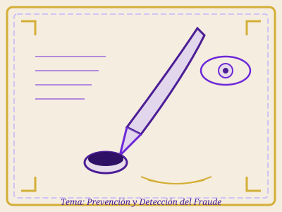

Tema: Responsabilidad en la Prevención y Detección del Fraude
Rol principal de la dirección y los responsables del gobierno de la entidad.
Esquema Iconográfico — Prevención y Detección del Fraude

Representación iconográfica del tema de prevención y detección del fraude
Fraude vs Error
Diferencia entre actos intencionales y no intencionales.
Tipos de Fraude
Información financiera fraudulenta y apropiación indebida de activos.
Responsabilidad Dirección
Por qué la responsabilidad principal recae en la dirección.
Acciones Concretas
Medidas específicas para prevenir y disuadir el fraude.
Rol del Auditor
Qué puede y qué no puede hacer el auditor.
Tabla Comparativa — Fraude vs Error
| Característica | Fraude | Error |
|---|---|---|
| Intencionalidad | Intencional (acto deliberado) | No intencional (descuido) |
| Uso de engaño | Sí, implica uso de engaño | No, es una omisión o declaración errónea |
| Ejemplos | Manipulación de registros, falsificación, omisiones deliberadas | Errores de cálculo, malinterpretación de hechos, descuidos |
| Consecuencias | Puede ser perjudicial para la entidad | Puede afectar la fiabilidad de la información |
Diagrama de Responsabilidades
👑 Dirección y Gobierno
- Responsabilidad PRIMARIA por prevención y detección
- Diseñar y mantener sistema de control interno
- Fomentar cultura de honestidad y ética
- Supervisar valoración de riesgos de fraude
- Establecer canales de denuncia
🔍 Auditor Externo
- Obtener SEGURIDAD RAZONABLE
- Mantener ESCÉPTICISMO PROFESIONAL
- Evaluar riesgos de incorrección material
- Diseñar procedimientos de auditoría
- NO es responsable de prevención del fraude
Acciones Concretas para Prevenir el Fraude
Cultura de Honestidad
Establecer expectativas claras de comportamiento ético para todos.
Ambiente de Control
Diseñar sistema de control interno eficaz que mitigue riesgos.
Supervisión Activa
Monitorear operaciones y revisar políticas periódicamente.
Canales de Denuncia
Establecer mecanismos seguros y confidenciales para reportar.